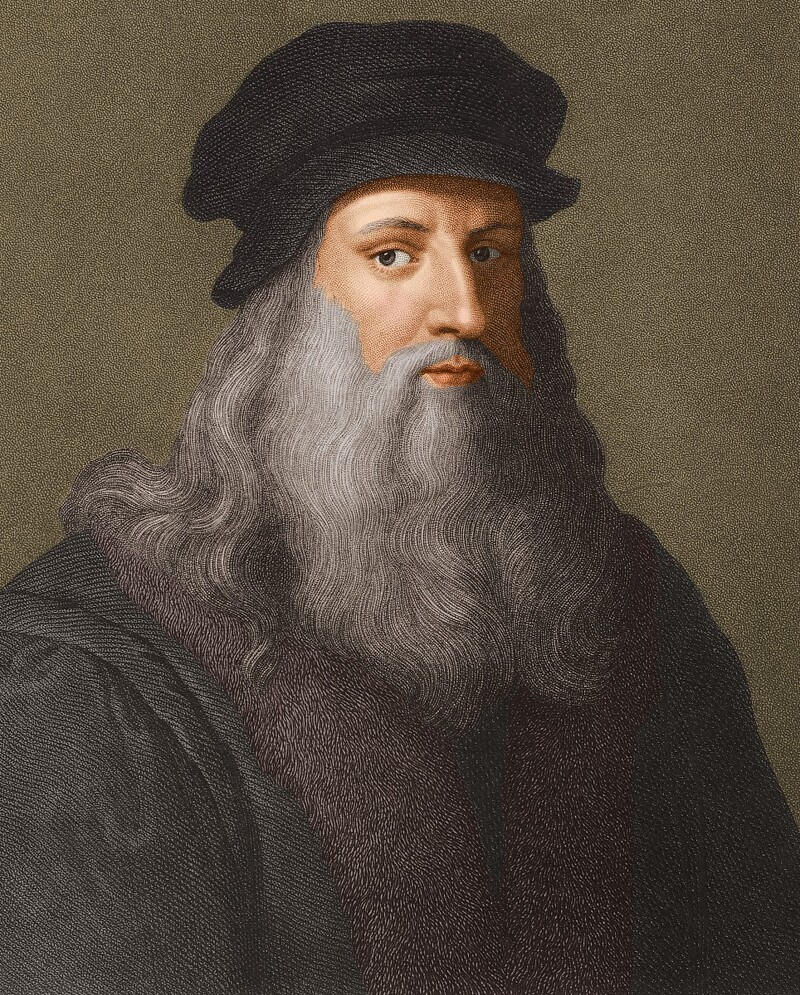

《李奧納多·迪·塞爾·皮耶羅·達文西》（英語：Leonardo di ser Piero da Vinci，意為「文西城皮耶羅先生之子李奧納多」），是義大利文藝復興時期佛羅倫斯共和國的博學者：在繪畫、音樂、建築、數學、幾何學、解剖學、生理學、動物學、植物學、天文學、氣象學、地質學、地理學、物理學、光學、力學、發明、土木工程等領域都有顯著的成就。這使他成為文藝復興時期人文主義的代表人物，也是歷史上最著名的藝術家之一，與米開朗基羅和拉斐爾並稱文藝復興三傑。小行星3000為紀念達文西而被命名為「李奧納多」。

《天使報喜》（英語：Annunciation）是15至16世紀文藝復興時期意大利畫家列奧納多·達·芬奇的早期油畫作品。約作於1472年。現藏於佛羅倫薩烏菲茲美術館。
作品取材於宗教故事，描繪有一對雙翼的天使來朝拜年輕的聖母瑪利亞，告訴她懷孕了，救苦救難的基督將要出生。
在橫披式的畫幅右側，坐在房子入口處附近的書架前面的，是聖母瑪麗亞；左側跪在萬花如錦的草地上的是來報的天使。貌美端莊的聖母，其表情看似沉穩，卻難以掩蓋住內心的激動和對將要做母親的欣喜，而左手拿著百合花正行單膝下跪禮的天使，美麗柔軟的面部則表現出對聖母的虔誠和恭敬之情，而且百合花往往也是基督的象徵。
《基督受洗》（英語：Baptism of Jesus）是意大利文藝復興時期畫家安德烈·德爾·委羅基奧的畫作，他的學生達芬奇可能也參與到了該作品的繪製中。一些藝術史學家認為還有別人參與了繪製。作品的主題是施洗約翰為耶穌施洗的場景。左側的天使被認為是由年輕的達芬奇完成的。作品現藏於佛羅倫薩烏菲茲美術館。
安德烈·德爾·委羅基奧是十五世紀後半期佛羅倫薩著名畫家，有一個很大的工作室。韋羅基奧本人並不多產，因此很少有作品是出自他自己之手。
《麥當娜貝諾瓦》（英語：Benois Madonna）Benois Madonna可能是達芬奇1478年10月開始繪製的兩幅以聖母瑪麗為主題的作品之一，另一幅是聖母的康乃馨。
這幅作品很可能是達芬奇獨立完成的第一副作品。達芬奇為該畫作所繪的兩幅素描現藏於大英博物館。
此作品是達芬奇最著名的畫作之一，後來許多年輕藝術家都仿繪過此作，其中包括拉斐爾的《粉紅色的聖母》。
此作品實際上失蹤了數個世紀，直到1909年建築師利昂·柏諾瓦才在聖彼得堡將其展出，引發了一場轟動，據稱這是他岳父的藏品之一。
《聖母的康乃馨》（英語：Madonna mit der Nelke）是達芬奇在1478-1480年間完成的一幅油畫，自1889年起展覽于慕尼黑的老繪畫陳列館中，但依舊是私人藏品。
畫作中心是聖母瑪麗和幼年的耶穌，聖母穿著華麗並飾有珠寶，左手持著一支康乃馨，除去聖母和聖子之外其他景色全部都是黑暗的。起初畫作被認為是韋羅基奧的作品，但後來轉而成為達芬奇畫作。
《岩間聖母》（英語：Virgin of the Rocks），有時是岩間聖母，是意大利文藝復興時期藝術家萊昂納多·達·芬奇（ Leonardo da Vinci ）的兩幅畫作的名稱，主題相同，構圖相同，除了幾個重要的細節。
這兩幅畫都展示了瑪麗和孩子耶穌與嬰兒施洗者約翰和天使烏列爾，在岩石環境中，這使這些畫作有了通常的名字。顯著的構圖差異在於天使的凝視和右手。作品有許多不同的細微之處，包括顏色、燈光、植物群以及使用暈染的方式。儘管記錄了相關委託的日期，但這兩幅畫的完整歷史尚不清楚，導致人們猜測這兩幅畫中哪一幅更早。
另外兩幅畫與委員會有關：每幅側板都包含一個演奏樂器的天使，並由萊昂納多的同事完成。這些都在倫敦國家美術館。
《哺乳聖母》（英語：Madonna Litta）是列奧納多·達·芬奇在15世紀末期繪製的一幅蛋彩畫，以聖母哺育聖嬰為主題。義大利文藝復興時期有許多畫家仿照這幅作品進行創作。此畫現藏於俄羅斯聖彼得堡埃爾米塔日博物館。
畫中的哺乳場景可能常見於當時的義大利，即將胸部衣物打開一個缺口以提供乳汁。畫中聖母與聖子看起來都很健康，這或許指出了這種做法的有效性。有些專家認為此畫並不是達芬奇單獨完成的，因為此畫的背景並不符合達芬奇的風格。不過達芬奇必定是其中的一員，至少從聖嬰的畫法上可以看出其達芬奇的身影。
《最後的晚餐》（英語：Last dinner）這幅畫描繪了耶穌與十二使徒的最後晚餐的，正如約翰福音中所說的那樣。特別是在耶穌宣布他的一位使徒將背叛他 之後的那一刻。它對空間的處理、對透視的掌握、對運動的處理和對人類情感的複雜展示，使其成為西方世界最知名的畫作之一，也是達·芬奇最著名的作品之一。一些評論家認為它在開啟向現在所謂的高文藝復興時期的過渡方面至關重要。
這項工作是萊昂納多的讚助人米蘭公爵盧多維科·斯福爾扎對教堂及其修道院建築進行翻新計劃的一部分。為了允許他不一致的繪畫時間表和頻繁的修改，它被塗上了允許定期改變的材料。石膏板上的蛋彩畫、瀝青和乳香。由於使用的方法、各種環境因素和故意損壞，儘管進行了多次修復嘗試，但現在幾乎沒有原畫保留下來。
《艾爾沃斯蒙娜麗莎》（英語：Isleworth Mona Lisa）是16世紀早期的一幅布面油畫，描繪了與達芬奇的 蒙娜麗莎相同的主題，儘管主題 ( Lisa del Giocondo ) 被描繪為更年輕。這幅畫被認為是在 1780 年代從意大利帶到英國的，並於 1913 年在英國鑑賞家休·布萊克從薩默塞特的一座莊園獲得時進入公眾視野掛了一個多世紀。自1910年代以來，各個領域的專家以及獲得這幅畫所有權的收藏家都斷言，這幅畫的主要元素是達文西本人的作品，是蒙娜麗莎的早期版本。
1914年，藝術評論家保羅·喬治·科諾迪批評了這幅畫的早期報導，其中包含一些錯誤，他認為這些錯誤導致對這幅畫的懷疑變成了“敵對的懷疑”，但科諾迪仍然發現這幅畫顯然“很大程度上是由大師精心製作的自己”。Konody 還發現這幅畫具有“比盧浮宮版本更令人愉悅和美麗”的特徵。
《聖母像》（義大利語：Madonna dei Fusi）又名《紡車邊的聖母》，是達文西的經典名畫之一，在藝術界更與《蒙娜麗莎的微笑》齊名。
聖母像是達文西應法國國王路易十二的顧問弗洛里蒙德·羅貝泰所託而繪的。此畫作共有兩個版本，分別被稱為貝克魯聖母及蘭斯登聖母，畫中的聖母手抱著嬰兒時期的耶穌，而耶穌則手執十字架形狀的紡錘。
《麗達與天鵝》（英語：Leda and the Swan）《麗達與天鵝》 是達芬奇繪製的一幅畫作，原作已丟失，可能已經被毀。其具體創作年代不詳，但達芬奇在1503年到1507年繪製的幾幅麗達的草稿還存在於世上。
1625年時義大利學者卡西亞諾·德爾·波佐曾提到過這幅畫，18世紀時再無音訊。只有數幅其他藝術家的複製品和仿作存留於世。
《蒙娜麗莎》（英語：Mona Lisa）為文藝復興時期畫家李奧納多·達文西所繪的一幅肖像畫與其代表作。被認為是義大利文藝復興時期的傑作， 也被描述為「世上最負盛名、訪問量最大、最常被寫、唱、模仿的藝術作品」。該畫中描繪了一位表情內斂的、微帶笑容的女士，她的笑容有時被稱作是「神秘的笑容」。
這幅畫所描繪的模特被認為是佛羅倫斯富商弗朗切斯科·德爾·喬宮多的夫人麗莎·喬宮多。它被塗在白色的倫巴第白楊木版上。達文西從未將這幅畫交給喬宮多家族，後來據信他在遺囑中將這幅畫留給了他的學徒達奧雷諾。它被認為是在1503年至1506年之間所繪製；然而達文西可能一直到1517年才完成該作。最後，《蒙娜麗莎》被法國國王弗朗索瓦一世買下，現在則為法國的財產。自1797年以來便在巴黎羅浮宮永久展出。